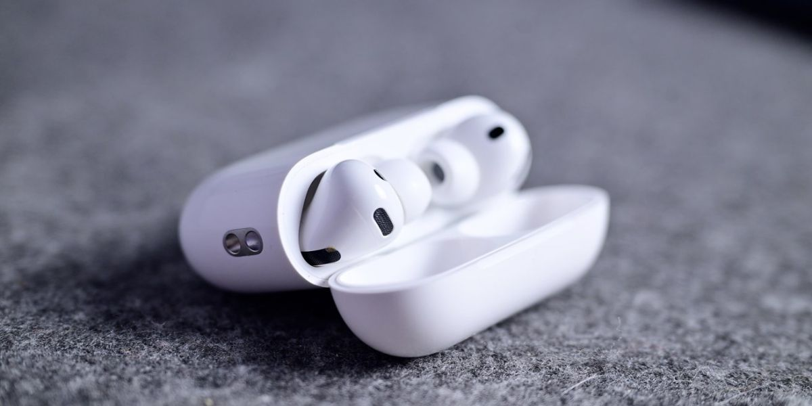
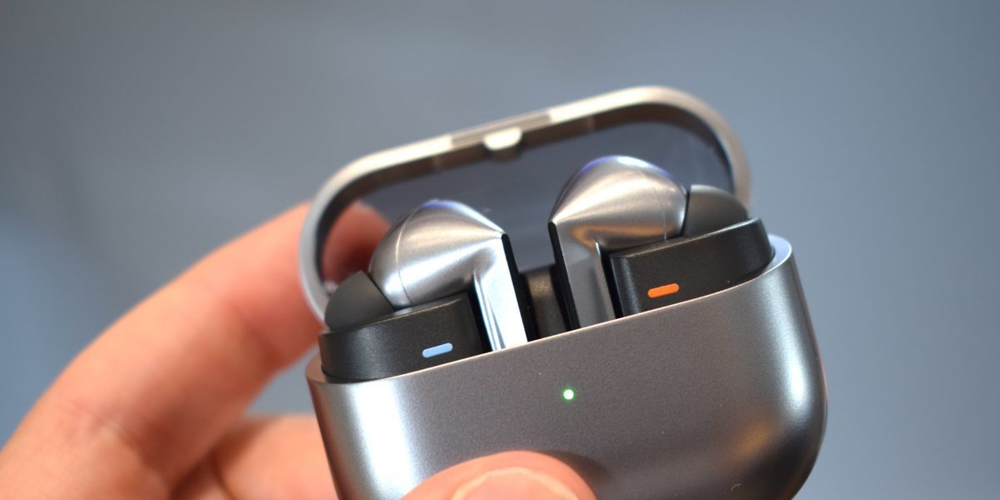
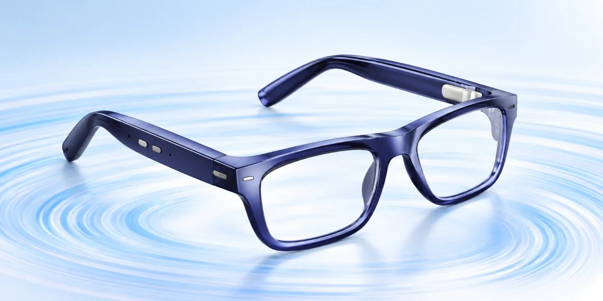

이어폰 × 보청기 × 안경
서로 다른 세 산업이 ‘더 잘 듣고 싶다’는 하나의 고객문제로 모이고 있다
이어폰, 보청기, 안경. 전혀 다른 세 산업이 지금 ‘더 잘 듣고 싶다’는 하나의 고객문제를 향해 모이고 있습니다. 네 가지 제품으로 산업의 경계가 무너지는 과정을 쉽게 따라가 봅니다.
이 제품들은 이어폰 · 보청기 · 안경의 신제품 경쟁이 아닙니다.
청력 보조가 일상생활 제품 속으로 들어가는 과정입니다.
예전에는 “잘 안 들린다”는 문제가 생기면 답은 하나였습니다. 병원에 가서 검사를 받고, 보청기를 사는 것. 그런데 지금은 매일 끼는 이어폰, 매일 쓰는 안경이 그 역할을 나눠 맡기 시작했습니다.
기술이 발전하면서 산업과 산업 사이의 경계가 흐려지는 현상입니다.
이어폰 회사가 보청기 기능을 넣고, 안경 회사가 소리를 다루기 시작하는 것처럼 “우리는 무슨 업종이다”라는 구분이 점점 의미를 잃는 것을 말합니다.
이 칼럼에서는 앞 편에서 배운 비즈니스혁신의 기준을 조금 더 자세히 펼쳐 네 제품에 대입해 보겠습니다.
서로 다른 세 산업이 ‘더 잘 듣고 싶다’는 하나의 고객문제로 모이고 있다
먼저 네 제품이 어디서 출발해서, 어떤 문제로 넓혀가고 있는지부터 보겠습니다. 모양이 아니라 문제를 보는 것이 핵심입니다.
같은 ‘청력’이라는 문제를 두고도 기업마다 들어오는 입구가 다릅니다. 사례마다 무엇을 바꿨는지 핵심 하나씩만 보겠습니다.

Apple AirPods Pro 2 · 3
AirPods Pro 2와 3는 최신 펌웨어와 호환 기기를 쓰면 청력 테스트와 보청기 기능을 제공합니다. Apple은 이를 경도~중등도 청력 손실이 있는 성인을 위한 기능으로 설명합니다.
Apple은 이어폰이라는 기존 고객 접점은 그대로 둔 채, 해결하는 문제만 넓혔습니다. 큰 소리 노출을 줄여주는 청력 보호 기능까지 더해져 이렇게 이어집니다.

Samsung Galaxy Buds3 Pro · Buds4 Pro
Buds3 Pro는 Galaxy AI로 주변 환경을 분석해 음질과 노이즈 캔슬링을 스스로 맞추고, 대화나 사이렌 소리를 감지합니다. 청력 테스트 기반의 Adapt Sound와 주변음 청각 보조 기능도 있습니다. Buds4 Pro에서는 귀 모양과 착용 상태까지 분석하는 개인화가 더 강해졌습니다.
여기서 핵심은 음질이 좋아졌다는 것이 아닙니다. 누가 소리를 조절하느냐가 바뀌었습니다.
Anker RIC Hearing Aids Pro
Apple과 Samsung이 ‘가전 → 청력 보조’로 내려온다면, Anker는 ‘보청기 → 소비자 가전’으로 올라옵니다. 약국이나 온라인에서 처방 없이 사는 OTC 보청기에 자체 AI 칩과 4개의 마이크를 넣어, 사람 목소리와 배경 소음을 실시간으로 분리합니다.
OTC(Over The Counter)는 처방전 없이 일반 매장에서 살 수 있다는 뜻입니다.
병원과 전문점을 거쳐야 했던 보청기를 이어폰처럼 쉽게 사고 쓰게 만든 제품군입니다.

EssilorLuxottica Nuance Audio
레이밴 · 오클리를 가진 세계 최대 안경 기업 에실로룩소티카가 만든 제품입니다. 안경테 안에 귀를 막지 않는 청력 기술을 넣어, 하나의 안경으로 시력과 청력을 함께 보조합니다. 대상은 경도~중등도 난청 성인이며, 앱으로 개인 맞춤 조정도 됩니다.
“난청이 있는데 어떤 보청기를 착용할까?”
“어차피 매일 쓰는 안경이, 잘 들리게까지 해주면 어떨까?”
산업의 경계가 서로 반대 방향에서 무너지고 있습니다.
따로 보면 각자의 신제품입니다. 그런데 나란히 놓으면 세 산업이 각기 다른 입구에서 출발해 같은 곳으로 모이고 있다는 것이 보입니다.
네 사례를 연구소의 혁신 패턴에 대입하면 각 기업이 어떤 방식으로 혁신했는지 더 명확해집니다.
난청, 대화가 잘 안 들리는 문제는 아주 오래된 문제입니다. 이것을 AI, 딥러닝(DNN), 스마트폰, 무선통신이라는 새로운 방법으로 풉니다.
대표 사례 : Anker“난청을 치료하고 보조한다”에서 “일상생활에서 누구나 더 잘 듣게 한다”로 문제 자체를 넓힙니다. 환자만이 아니라 모든 사람이 고객이 됩니다.
대표 사례 : Apple이어폰을 쓰던 고객에게 음악과 통화뿐 아니라 청력 검사 · 보호 · 보조까지 제공합니다. 고객은 그대로인데 해결해 주는 문제가 늘어납니다.
대표 사례 : Apple · Samsung안경과 보청기의 경계를 없애 ‘듣는 안경’이라는, 이전에는 없던 제품 카테고리를 만듭니다.
대표 사례 : Nuance Audio빅블러가 무서운 이유는 여기에 있습니다. 경쟁자가 내 업종 바깥에서 나타납니다.
내 경쟁자는 누구인가?
같은 업종의 회사가 아니라, 내 고객의 같은 문제를 해결하려는 모든 회사입니다.
네 사례를 하나의 공식으로 압축하면 이렇습니다.
AirPods, Galaxy Buds, Anker RIC, Nuance Audio는 전혀 다른 제품처럼 보입니다. 하지만 사실은 하나의 거대한 산업 융합을 서로 다른 입구에서 만들어가고 있는 제품들입니다.
빅블러는 대기업만의 이야기가 아닙니다. 작은 가게, 작은 회사에서도 똑같이 일어납니다. 내 업종 바깥에서 내 고객의 문제를 먼저 해결하는 누군가가 나타날 수 있고, 반대로 내가 다른 업종의 고객문제를 가져와 해결할 수도 있습니다.
이렇게 스스로 물어보십시오. 내 고객은 내 상품을 쓰면서 어떤 다른 불편을 함께 겪고 있는가. 그리고 그 불편을 다른 업종에서는 어떻게 해결하고 있는가.
※ 본문에 소개한 제품 기능은 기업 발표 기준이며, 국가 · 기기 · 소프트웨어 버전에 따라 제공 여부가 다를 수 있습니다. 청력 손실이 의심된다면 전문가 상담을 권합니다.